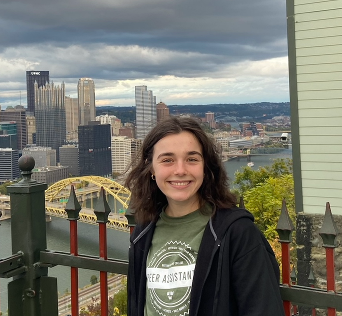

About Us
Our Goal
In this website, our goal is to analyze how social media
has impacted the way global conflicts are being documented.
In many ways, social media has allowed for previously unheard
voices to be heard by the entire world. However, social media
has also enabled entities to distort the truth and push
harmful agendas. Within this website, we also look at how
global conflicts of the past have been reported (or in some cases
NOT reported) and the tactics that were used to either report
or distort the truth. When comparing documentation techniques,
it can be discerned that social media has become another way for
activists to reveal the truth, and for governments to
cover it up.
Our Team
Bryn

Meet Bryn, a junior at Gustavus Adolphus College double majoring in history and computer science, so she is basically the elon musk of historical timelines. In her educational pursuits, she is on a mission to create a state of the art time-traveling app, so you can revisit historical events without the risk of accidentally bringing back a pet dinosaur or the black plague. Bryn spends most of her time at the Gustie Well as PA, a student leadership group at GAC that are known for being the unsung heroes of bathroom journalism. She also, despite her severe lactose intolerance, is a Peer Malt. When asked about her hobbies, she said she loves to knit. "I'm conquering the space-time continuum and also need a warm scarf."
Julia

Meet Julia, a junior at Gustavus Adolphus College majoring in Biology with minors in computer science and statistics. This education is very beneficial for creating a statistically accurate molecular robot, but does aid in passing a drivers test, as she failed 5 times. Do not fear for your life, she did pass the 6th test. Julia stated, “I am thankful for the DMV in the sketchy mall in St. Cloud. They passed me with flying colors.” Julia also is involved in PA, though not the same as bryn. Julia is a member of Puzzlers Anonymous, a group filled with individuals working everyday to fight their puzzle addiction. Specifically, she struggles with thrifted jigsaw puzzles from goodwill and the daily NYT crossword. Julia thinks that her association with PA got her into GAC College View apartments (definitely wasn’t the celiac disease), as she now has room for a permanent puzzle table. When asked about her other hobbies, Julia says she loves listening to underground indie music artists, citing her spotify wrapped top artists included Noah Kahan, Taylor Swift, and Harry Styles.
Cecilia
Meet Cecilia, a junior at Gustavus Adolphus College majoring in math with a minor in computer Science. Her calm demeanor masks a strong career aspiration as a super spy for the CIA. She is currently enrolled in a class dubbed “Discrete Dynamical Systems,” but we all know that class is mere front for her secret tactical training. We all know her dreams of espionage and counterintelligence were a backup to following the path of Simone Biles, but this was derailed after she received a stress fracture in her spine after taking Algebraic structures and linear algebra concurrently. Instead of mastering gravity-defying flips, she found herself grounded by the unexpected challenges of advanced mathematical acrobatics. It seems the only somersaults she'd be performing were mental gymnastics in the world of numbers, not on the gymnastics floor. When asked about her hobbies, Cecilia mentioned her love for watching football and baseball, working out at the crack of dawn, and crying. We feel you Cecilia.